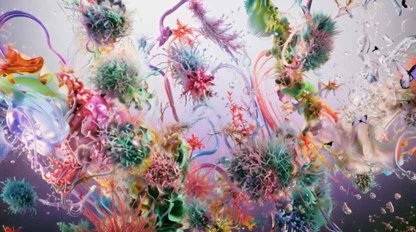
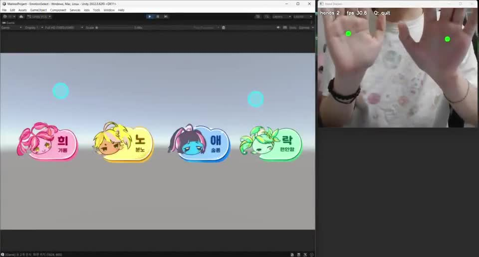
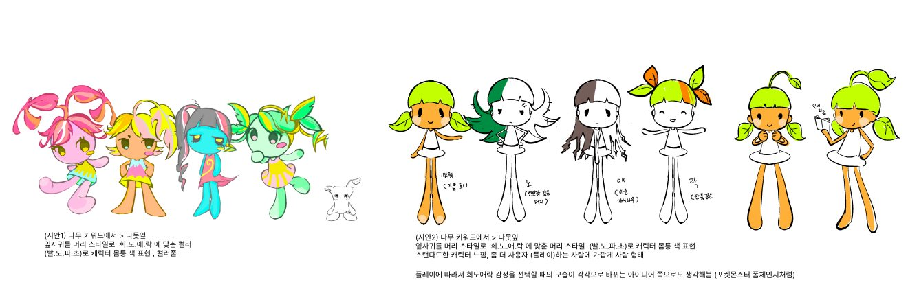

← BackSongjoo Choi
Process
사람의 지각과 행동을 근거로 설계하고, 초안은 AI와 만들고, 마지막은 직접 확인하고 손으로 고칩니다. 이 페이지는 그 과정을 실제 작업을 예로 설명합니다.
제작 흐름Workflow
- 01관찰과 가설설문, 벤치마킹, 페르소나로 문제를 정의사람
- 02초안 만들기Midjourney로 장면 이미지와 영상, Claude와 코드·문서 초안AI
- 03직접 검증테스트 영상으로 실제 동작과 화면을 확인사람
- 04수작업 보정결과 선별과 재생성, 수치 조정, 방향 지시와 검수사람
- 05기록결과와 시행착오를 사이트에 남김사람
지식 역량Knowledge
| 역량 | 실제로 한 일 | 작업에서 쓴 곳 |
|---|---|---|
| 사람 이해와 조사 | 설문 61명(2026.9.3~9.5), 벤치마킹 4개, 페르소나 3종으로 문제를 정의하고, 약점(게임 중 단어를 살펴보기 어려움)은 게임 뒤 단어 정보 화면으로 분리해 대응 | 말모이 기획 |
| 인터랙션 구현 | MediaPipe 손 인식 테스트, 화면 모서리 4점 보정, 주먹 쥐기 선택, Unity 손 커서 | 말모이 입력 |
| 게임 설계와 Unity(C#) | 게임마다 Manager 스크립트 하나로 규칙을 값으로 관리해 코드 수정 없이 밸런스 조절 | 말모이 개발 |
| 웹 · JavaScript | 나무 비주얼 첫 시안, 포트폴리오 사이트의 반응형 인트로와 상세 페이지 | 초기 실험, 이 사이트 |
| TouchDesigner | 음원을 저·중·고음으로 분석하고 GLSL 노드가 반응하는 오디오 반응형 비주얼 | 말모이 비주얼 |
| 언어 | JLPT N2, HSK 3급 | 일본·중국 중심의 해외 활동 방향 |
AI 활용 방식AI in the workflow
- AI를 작품 안에 넣는 것이 아니라 기획, 리서치, 시각화, 코딩, 검증 같은 작업 방식에 쓴다는 기준으로 사용합니다
- 시각화: Midjourney로 장면 이미지를 만들고, Midjourney의 영상 기능으로 영상화했습니다 (유영하는 생태, 빛의너머, Detroit: Become Human)
- 코딩과 문서: 이 포트폴리오 사이트는 Claude와 대화하며 코드와 문서를 만들고, 결과를 직접 확인해 수정 방향을 지시하는 방식으로 제작했습니다
- 판단은 사람이 합니다: 주제와 방향, 무엇을 남기고 버릴지, 완성 기준은 직접 정합니다
수작업 보정Hand-finishing
1. Midjourney 결과 선별과 재생성
- 생성된 장면 중 작품 방향에 맞는 것을 고르고, 맞지 않으면 다시 생성해 영상으로 이어갔습니다
- 빛의너머는 TouchDesigner(GLSL)로 후작업해 후작업 영상과 원본을 함께 올렸고, TouchDesigner를 Claude에 연결하다 생긴 오류와 해결 과정도 기록했습니다. 유영하는 생태의 후작업은 아직 하지 않았습니다

2. Unity 수치와 판정 직접 조정
- 손을 0.8초 올려 두면 자동 선택되는 문제를 주먹 쥐기 입력으로 바꾸고, 폈다 쥐어야 입력되도록 하고 입력 간격을 0.5초로 맞췄습니다
- 목숨 5개, 오답 연출 1.1초, 정답 3연속 시 피버타임 같은 값은 인스펙터에서 직접 조절해 게임 감각을 맞췄습니다
- 결과 나무에서 호버와 선택이 반복되는 문제는 한 번에 하나만 선택하게 고쳤습니다


3. 캐릭터와 로고 방향 지시와 검수
- 캐릭터 디자인은 팀 디자이너가 맡고, 저는 방향을 지시하고 결과물을 검수했습니다
- 시안1은 나뭇잎을 머리 모양으로 삼아 감정별 색으로 구분했고, 시안2는 사용자에 가까운 사람 형태로 바꿔 비교했습니다

지금의 한계Next
- Midjourney 작업의 프롬프트 기록은 남아 있지 않고, 유영하는 생태의 TouchDesigner 후작업은 아직 하지 않았습니다
- 수작업 보정 사례는 말모이가 가장 구체적이고, 나머지 작업은 기록을 쌓는 중입니다
- 앞으로 작업을 시작부터 끝까지 기록해 이 페이지에 사례를 더하겠습니다